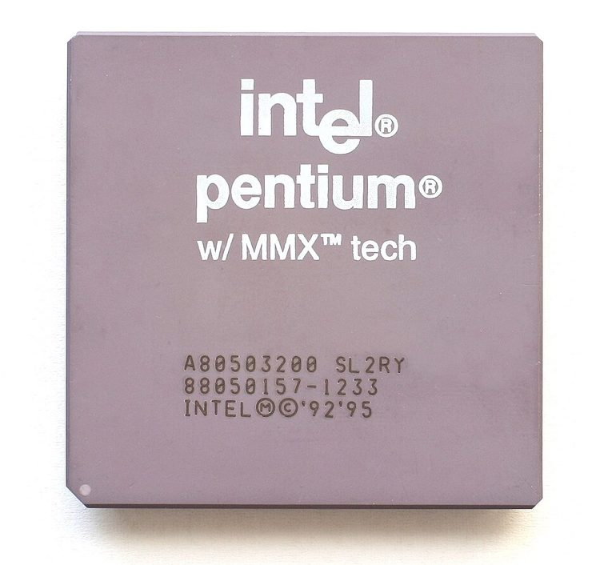

[ PENTIUM ERA PROCESSORS // IDENTIFIED COMPONENT ]
Intel Pentium MMX 200
The 200 MHz P55C Pentium with MMX Technology added packed-integer instructions and a substantially larger L1 cache to the Socket 7 Pentium line.

MODEL IDENTIFICATION: Intel Pentium MMX 200. Read the full top marking/OPN, speed grade, package, and stepping from the physical part; do not transfer specifications across similarly named revisions.
Recorded specifications
| Cataloged part | Intel Pentium MMX 200 |
|---|---|
| Era / family | P55C Pentium with MMX Technology, 1997; 200 MHz desktop speed grade. |
| Key specifications | 200 MHz core; 66 MHz front-side bus; two-way superscalar x86 core; 16 KB instruction plus 16 KB data L1 cache; MMX instruction extensions; 2.8 V core with split-voltage I/O; Socket 7 package. |
| Interface / fit | Needs a Socket 7 board that explicitly supports P55C split-voltage operation (2.8 V core) and the 200 MHz processor/bus configuration. Socket fit alone is not sufficient. |
| Variants / identification | P55C desktop and mobile variants differ in package and electrical limits. Original non-MMX Pentiums use a different voltage/cache configuration; firmware may also need an update. |
Compatibility and service notes
- Needs a Socket 7 board that explicitly supports P55C split-voltage operation (2.8 V core) and the 200 MHz processor/bus configuration. Socket fit alone is not sufficient.
- P55C desktop and mobile variants differ in package and electrical limits. Original non-MMX Pentiums use a different voltage/cache configuration; firmware may also need an update.
- Inspect the board’s voltage-regulator setting before installation and confirm the processor’s MMX marking. Keep thermal contact secure; preserve motherboard jumper and BIOS details alongside the CPU record.
- Before installation, compare the exact CPU marking with the motherboard maker’s support list, board revision, BIOS minimum, package/socket, power requirements, and memory type. Do not force a package into a socket.
Service & archival record
Inspect the board’s voltage-regulator setting before installation and confirm the processor’s MMX marking. Keep thermal contact secure; preserve motherboard jumper and BIOS details alongside the CPU record.
For a collection record, photograph both sides, retain the full model/OPN and date/lot codes, describe package and contact condition, and record the tested motherboard revision, firmware, cooling, memory, and measured operating conditions. Separate measured observations from published limits.
Sources & further reading
- Intel Pentium with MMX Technology data sheet — 200 MHz P55C familyModel-specific manufacturer, technical-document, or product-history reference; consult the exact device marking and board revision.
- Intel Pentium Processor with MMX Technology manual — electrical and thermal designModel-specific manufacturer, technical-document, or product-history reference; consult the exact device marking and board revision.
- Intel MMX/Pentium generation history — Intel processor archiveModel-specific manufacturer, technical-document, or product-history reference; consult the exact device marking and board revision.
- 66Mhz Brain — Did MMX make any difference?Independent video review; treat as supplementary context, not primary manufacturer documentation.
Third-party mirrors or historical document indexes may host manufacturer-authored manuals. Check document revision and exact model marking; board compatibility remains specific to its maker and firmware.